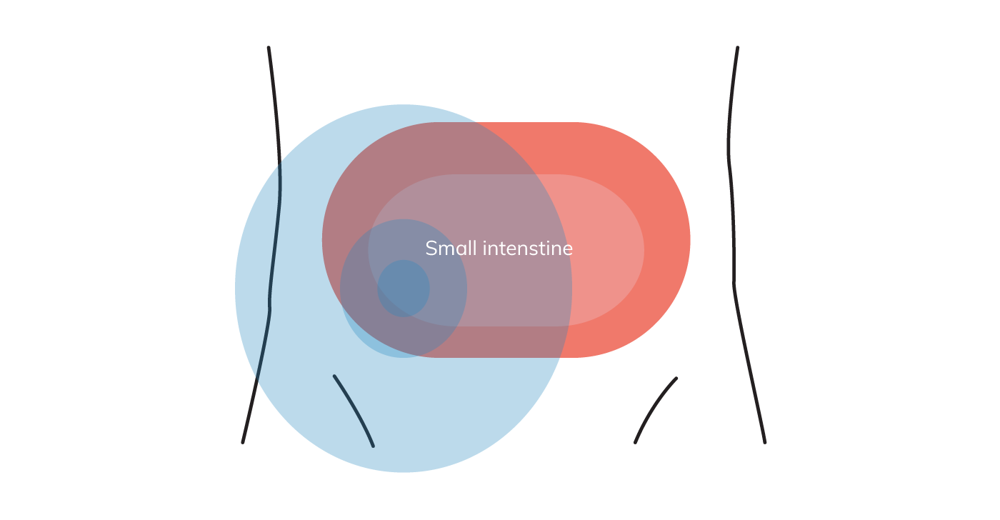
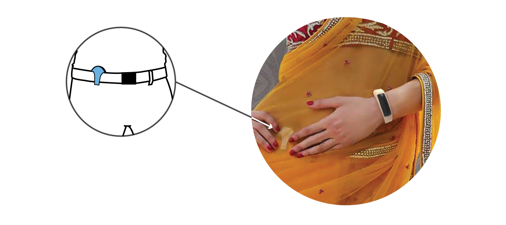

WEX - Wearable Exerciser üèÉ‚Äç‚ôÇÔ∏è
Overview

This project was a finalist entry (amongst top 7 teams out of total 59 teams) for a wearable design competition conducted by IIT - Guwahati and TATA in 2016. We were a team of 4 students from NID Bangalore. My contribution mainly involved in user and market research for health wearables and their sensors, which mainly comprised of secondary research - reading literary research papers, comparative study of existing wearables; and designing the mobile application.
Problem statement
To Design a modular holistic health wearable. The focus has to be to optimise the wearable design for comfort, non-invasiveness, ease of use, communication and efficiency. The wearable should sense/measure the following:
- ■ Sunlight exposure
- ■ Abdominal sounds, signals, and movements
- ■ Heart rate variability
- ■ Posture/stretching
- ■ Breathing
- ■ Blood Pressure
The sensors DO NOT have to be developed by the participant but adequate research needs to be done on available sensors that can be part of your wearable.
Proposed solution
A modular 2 part IoT health wearable + mobile app
User can track the status and check out the trends using WEX mobile phone application

User can track the status and check out the trends using WEX mobile phone application

Mobile app video prototype
Design process
Research
We ideated about the possible ways to wear a health wearables, alongwith exploring different forms and mechanisms to design a wearable, which can measure all the required parameters.
To get a better understanding we studied available sensor technologies, which can be used for wearables, in the market.
Monitoring blood pressure
Two arrays of sensors are placed along the same artery to pick up signals. The distance between two sensors and the time blood takes to travel between them is measured to obtain the pulse wave velocity. Pulse wave velocity is directly related to blood pressure.
Breathing and posture
The breathing rate is measured by detecting the change in pressure as a result of the movement of the diaphragm. For posture the devices needs to be calibrated for neutral or idle posture initially. The change in posture is detected when the pressure measured is below the calibrated one and haptic feedback is given to the user to correct his posture.
Pulse rate
The pulse is detected with help of LED and photodiode sensors. The LED light is shined into the skin. The scattered light is detedcted by the photodiode and the pulse rate is calculated. The heart rate is in direct relation with the pulse rate.
Abdominal sounds
Vibration sensor calculates abdominal sounds caused by the movement between the intestinal contents.
Ideations
Considering the usability of the wearable and the range of types of users including Indian ladies wearing sarees,aged people,young folks who wish to make a style statement by modern looking wearble, we went to sketch out the final model and made a thermocol mocked model of the desired form.
The final concept is a wrist band with removable device which can then be tucked-in near the waist.

Physical prototype testing
Material Explorations
3D printing was used to create the prototype of WEX and usability of WEX was studied by asking different users to wear it for a day.
Users with 1:1 scale 3D printed prototype

Results: Use case scenarios
Wrist band
Wrist band calculates sun exposure, heart rate and blood pressure.
Tuck-in module
Tuck-in module calculates abdomenal sounds, posture and breathing.
Stress buster

Wrist band is a good stress buster and muscle strengthner when used as a hand grip exerciser.
Key Takeaways

From left to right: Hemant Gupta (IxD), Omkar Khadamkar (DRE), ⬆ Rohan Dinde (DRE) and ⬆ Shubi Agrawal (UD), at IIT-Guwahati after our final presentation to the faculties and TATA representatives.
- Learned the skill of working in an interdesciplinary design team, where each individual brought different perspective to the discussion table.
- Got exposure to different types of softwares e.g. 3D (Rhinocerous; Keyshot and SketchUp) and Adobe Creative Suite, to create the product renders and aninations.
- Had a great experience travelling to and presenting our work at Indian Institute of Technology, Guwahati.